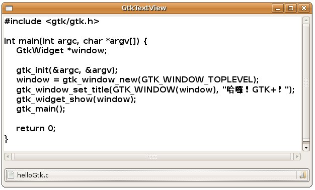

GtkTextView可用於顯示文字與編輯文字，其本身並不具備捲軸功能，您可以使用GtkScrolledWindow套於其上，為其增加捲軸功能，GtkScrolledWindow可以簡單的使用gtk_scrolled_window_new()來建立：
GtkWidget *scrolledWindow = gtk_scrolled_window_new(NULL, NULL);
gtk_scrolled_window_new()的兩個參數為GtkAdjustment，如果您給定為NULL，則會自動生成預設的兩個GtkAdjustment。要將GtkTextView加入GtkScrolledWindow可以如下：
GtkWidget *textView = gtk_text_view_new();
gtk_container_add(GTK_CONTAINER(scrolledWindow), textView);
若要取得或設定GtkTextView中的文字，則要取得其內部GtkTextBuffer緩衝區物件，一個例子如下：
GtkTextBuffer *buffer;
buffer = gtk_text_view_get_buffer(GTK_TEXT_VIEW(textView));
gtk_text_buffer_set_text(buffer, "Hello! World!", -1);
設定文字是使用gtk_text_buffer_set_text()函式，想取得文字則是使用gtk_text_buffer_get_text()。
以下這個程式綜合了之前所介紹過的幾個元件，像是 GtkVBox、GtkFileChooserButton 以及GtkTextView元件來進行文字檔案的讀取與顯示，其中關於檔案讀取的部份，使用了GLib的 g_file_get_contents() 等函式，簡單的達到開啟檔案讀取的動作：
#include <gtk/gtk.h>
void file_changed(GtkFileChooserButton *button, GtkTextView *textView) {
gchar *filename;
gchar *content;
gsize bytes;
GError *error = NULL;
GtkTextBuffer *buffer;
filename = gtk_file_chooser_get_filename(GTK_FILE_CHOOSER(button));
g_file_get_contents(filename, &content, &bytes, &error);
if (error != NULL) {
g_printf(error->message);
g_clear_error(&error);
}
buffer = gtk_text_view_get_buffer(GTK_TEXT_VIEW (textView));
gtk_text_buffer_set_text (buffer, content, -1);
}
int main(int argc, char *argv[]) {
GtkWidget *window;
GtkWidget *scrolledWindow;
GtkWidget *textView;
GtkWidget *button;
GtkWidget *vbox;
PangoFontDescription *fontDesc;
gtk_init(&argc, &argv);
window = gtk_window_new(GTK_WINDOW_TOPLEVEL);
gtk_window_set_title(GTK_WINDOW(window), "GtkTextView");
gtk_window_set_default_size(GTK_WINDOW(window), 250, 50);
scrolledWindow = gtk_scrolled_window_new(NULL, NULL);
textView = gtk_text_view_new();
fontDesc = pango_font_description_from_string("Courier Pitch Bold 12");
gtk_widget_modify_font(textView, fontDesc);
gtk_container_add(GTK_CONTAINER(scrolledWindow), textView);
button = gtk_file_chooser_button_new(
"選取檔案", GTK_FILE_CHOOSER_ACTION_OPEN);
vbox = gtk_vbox_new(FALSE, 5);
gtk_box_pack_start(GTK_BOX(vbox), scrolledWindow, TRUE, TRUE, 5);
gtk_box_pack_start(GTK_BOX(vbox), button, FALSE, FALSE, 5);
gtk_container_add(GTK_CONTAINER(window), vbox);
g_signal_connect(GTK_OBJECT(button), "selection_changed",
G_CALLBACK(file_changed), textView);
g_signal_connect(GTK_OBJECT(window), "destroy",
G_CALLBACK(gtk_main_quit), NULL);
gtk_widget_show_all(window);
gtk_main();
return 0;
}
一個讀取檔案後的執行畫面如下所示：

|
|